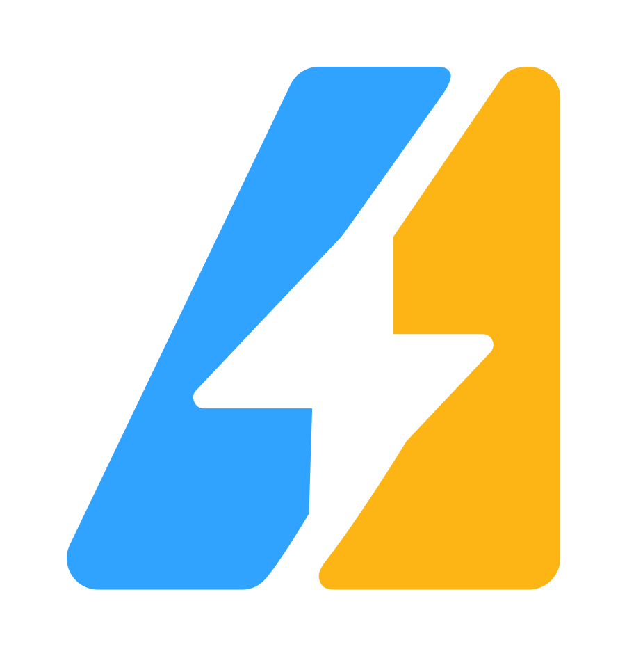

AGENTS · TOOLS · LIVE RESPONSES
Your ideas.
Agents in action.
Connect tools, give agents a task, and follow the work.
Every progress update comes from your API.
Connect your gatewayConfigure your local gateway
Each prompt is a Responses request. Subsequent prompts always include the previous response ID. Start a new session to clear the chain.
store:true saves a response so its ID can be used by the next prompt.
Create or load a durable conversation. Prompts use HTTP Responses with conversation and store:true; they do not send previous_response_id.
No conversation selected.
Stored conversation items
01 / THE CHALLENGE
Set the mission
Describe the goal once. Your coordinator takes it from here.
Give your agents tools
Python runs in a fresh sandbox. Enable the interpreter on your gateway to execute code.
02 / THE TEAM AT WORK
Follow the progress

Your team is ready for a challenge.
Start a run to follow each agent’s thinking,
tool calls, and responses.
The final answer will appear here.
Optional developer view. Agent progress is available in the first tab.
Request · POST /v1/responses
Raw streaming events · latest 250
No events yet.